Shared dialog
Every rule that paints this component, in one file. Colour through a role, geometry straight from a primitive.
What it is
The one overlay in the product, and the material it is made of: a stone plate, a head, a body, a close, and a backdrop that dismisses. Sign in, Add funds, Withdraw, the win and loss outcomes and the how-it-works sheet are all this shell with different contents.
Its shape is decided by a stance rather than by a pattern. An overlay here is a PAGE that happens to be drawn over another one: it has a URL in the painted tree, it keeps the bottom nav, and a person who changes their mind leaves the way they leave anything else. That is why the close is a courtesy rather than the only exit, and why nothing in this component traps focus into a corner a person has to argue with.
Anatomy
Which part is which, in the product's own words. Every class named here is one this file styles, and the build fails if it is not.
.app-dialog- the shell. A realdialogelement, so Esc, the backdrop and the top layer are the browser's job and not a script's..sheet-head,.sheet-sub- the head and its one-line subtitle, which is the same hero on every overlay since Step 22..sheet-body- what the overlay is for. Everything inside it belongs to another component..sheet-close- the dismiss..fine- the small print at the foot of an overlay: the line that says what happens to the money and on what terms..signin-dialog- the auth variant, which is the only one with four states of its own..outcome-dialog- the win and loss variant. It is named for the outcome because that is the one place in this product where green and red are allowed to mean something.
Live
The component in the markup it ships with, quoted from the frozen kit, inside the product's own wrapper and painted by components/index.css alone. Each frame is a page of its own, so the width under the title is a real viewport and the media queries answer to it.
state Both carry the open attribute. In the product they are opened with showModal(), which is why the staging sheet puts them back in the flow.
A skin, not a component. signin.css was folded into dialog.css on 2026-08-02, same anatomy zone for zone, and the stand stayed because the skin still ships. The component field was corrected here on the same day: it had been corrected in the GENERATED index.json only, so the first person to re-run the extractor got the deleted component back.
Also rendered inside
The same markup, shown once on the page of the component that owns it. Nothing here is a second copy.
States, as they look
Photographs, not renderings. Each was taken in the specimen linked beside it with a REAL pointer, a real Tab and the mouse button really held down (ui-kit/_verify/states.cjs); nothing here is a state faked with a stand class, which is the rule this section used to be missing because of. One row per distinct FACE: two elements that measure the same at rest are one picture, however many screens carry them, and that grouping is computed rather than chosen. The pictures go stale the moment a rule changes, so each one records the files it was taken from and python3 ui-kit/_states.py fails when their bytes move.
The dismiss, at rest, hovered, held and focused. It is deliberately quiet: the backdrop and Esc are the real exits and this is the visible one, so a person who is looking for a way out finds it without being urged.
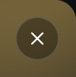
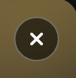
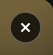
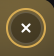
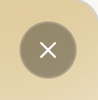
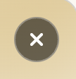
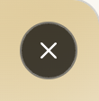
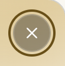
A link in the sign-in body, all four faces. Underlined at rest, because in an overlay about an account the terms a person is agreeing to must be visibly reachable before they act.
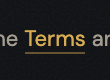
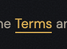
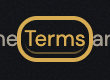
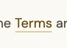
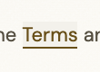
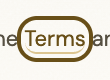
The how-it-works sheet's link to its full page, photographed here as well as on hiw-dialog: the same element seen from the shell that holds it, which is what a shared component's page is for.
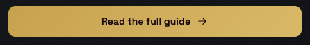
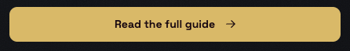
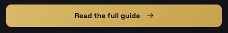
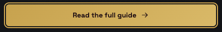
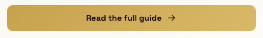
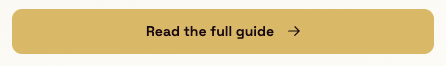
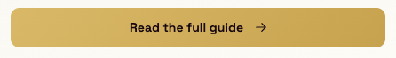
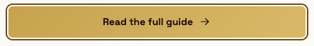
A link in the outcome overlay. This is the one dialog variant where green and red carry meaning, and the link takes neither: the outcome colours state the result, and a control that borrows one would read as a recommendation about the next bet.
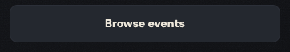
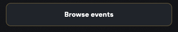
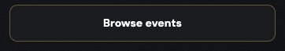
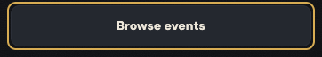
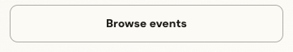
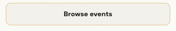
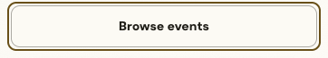
When to use
The judgement a generator cannot read out of css, and the reason ui-kit/authored/dialog.md exists.
When the answer is needed before the flow continues, and the flow is worth returning to. Signing in mid-bet, adding funds mid-bet, confirming a withdrawal: in every case there is a page underneath that the person still wants.
At 360 it is a sheet and above the breakpoint it is a modal, and that is one component rather than two: the same markup, the same copy, a different geometry.
Not for something a person can safely miss - that is a toast - and not for something that stays true after they look away, which is a notice standing in the page. The question to ask is whether the screen behind it still makes sense while this is open. If it does not, this is right.
Never as a second copy of a page. Five of these overlays also exist as standalone screens, and gate 19 exists because they were two markups once: one canonical body, and only the head, the wiring and the state screens may differ.
The rule, and the anti-rule
One sentence to follow and one mistake worth naming. An anti-rule has to name the component that should have been used instead, or it is a complaint rather than an address, and the build checks that it does.
The overlay is a page over a page: the bottom nav stays, the backdrop and Esc dismiss, and nothing in it prevents a person from leaving without answering.
Never build the sheet's material a second time inside the thing it holds: hiw-dialog is the case that proves it, and it owns only the body of its sheet while the plate, the head, the close and the sheet-versus-modal behaviour come from here. A component that redraws the shell would give this product two answers to what an overlay looks like.
Seen: gate 19 in ui-kit/_check_kit.py, which was written because a dialog and its standalone page had drifted into two markups, and voice/docs/microcopy.md Step 27, the step that reconciled them. The split was found in the copy first and in the markup second, which is the usual order here.
Roles it reads
Colour comes in only through these. Change one on the token page and it changes here and on every screen at once.
--bevel-hair--bevel-lit--bg-control--bg-dialog-head-from--bg-plate--bg-plate-from--bg-plate-to--bg-pressed--bg-surface--border-hairline--color-action--color-action-lit--control-knob--edge-shade-strong--line-on-photo--line-on-photo-hover--mask-solid--result-won--result-won-stone--scrim--scrim-photo--shadow-ink-45--shadow-ink-60--shadow-ink-72--shadow-ink-85--surface-grain--text-brass--text-muted--text-primary--text-strong--tint-brass-45Classes
Every class this file styles, and how many of the 105 painted screens carry it. A zero is not automatically dead: the last column says whether the class is built at runtime, shown only in the kit, a leftover of the grey wireframes, used by a course page, or genuinely used by nothing. Gate 30 fails the build on the last kind.
| class | screens | if zero |
|---|---|---|
| .app-case | 105 | |
| .app-dialog | 105 | |
| .bet-panel | 11 | |
| .bet-sheet | 4 | |
| .fine | 105 | |
| .ic | 105 | |
| .loss-dialog | 2 | |
| .outcome-dialog | 6 | |
| .sheet-body | 105 | |
| .sheet-close | 105 | |
| .sheet-head | 105 | |
| .sheet-sub | 105 | |
| .signin-dialog | 105 | |
| .spinner-box | 7 | |
| .win-dialog | 4 |
Where it stands
Written from
The authored half of this page is the one artefact here no gate can read: a sentence cannot be checked for being true. So it names its sources before it says anything, and the build fails when one of them does not exist. Read this first if you doubt a claim above it.
ui-kit/docs/inventory.mdL120 - "Shared dialog shell (dialog.app-dialog, stone-plate material)", filed L3, "every page (emitted in shell)", states "open / close (backdrop, Esc); modal (desktop) / sheet (mobile)", 104.ui-kit/docs/inventory.mdL127 and L128 - the bottom-sheet overlay with its grab and backdrop (17 screens) and the sign-in dialog with its four states.CLAUDE.mdand gate 19 inui-kit/_check_kit.py- "A dialog that also has a standalone page is one markup, not two": the canonical copy is the one inui-visual/event-feed.html, and only the head, the wiring and the state screens may differ.voice/docs/microcopy.mdStep 22, Step 23 and Step 27 - the shared dialog hero across 76 pages, Withdraw becoming a dialog in both trees, and "One dialog, one copy, and the page that was left as a document", which is the step that closed the split gate 19 now holds.- R9 in
ui-kit/docs/architecture.md- the seventeen screens whose content IS an invoked overlay still carry the bottom nav, because these are pages in this product and not modal traps. - The 105 painted screens.
What the file says
The selectors and the css, for a person about to edit them. To change this component, edit components/dialog.css; to change a value it reads, edit the role in components/tokens.css.
Every state rule, and what it moves
| selector | what moves |
|---|---|
| dialog.app-dialog.outcome-dialog .sheet-close:hover | background:color-mix(in oklab,var(--scrim-photo) 55%,transparent);border-color:var(--line-on-photo-hover) |
| dialog.app-dialog.outcome-dialog .sheet-close:active | background:color-mix(in oklab,var(--scrim-photo) 72%,transparent);border-color:var(--line-on-photo-hover) |
| dialog.app-dialog:not(.outcome-dialog) .sheet-close:hover | background:color-mix(in oklab,var(--scrim-photo) 55%,transparent);border-color:var(--line-on-photo-hover) |
| dialog.app-dialog:not(.outcome-dialog) .sheet-close:active | background:color-mix(in oklab,var(--scrim-photo) 72%,transparent);border-color:var(--line-on-photo-hover) |
| dialog.app-dialog.signin-dialog .fine a:hover | border-bottom-color:var(--text-brass) |
| dialog.app-dialog.signin-dialog .fine a:active | background:var(--bg-pressed);border-bottom-color:var(--text-brass) |
| dialog.app-dialog a:focus-visible | border-radius:var(--radius-6) |
The tokens these states read, on both grounds
Neither panel is a screenshot. Each carries data-theme itself, so the token resolves inside it and a role that was given a value in only one theme shows up here as a control that does not move.
--scrim-photoConfirm betthe ground the control settles onto--line-on-photo-hoverConfirm betthe edge this state draws--text-brassConfirm betthe label, on the ground this state puts it on--bg-pressedConfirm betthe ground the control settles onto--scrim-photoConfirm betthe ground the control settles onto--line-on-photo-hoverConfirm betthe edge this state draws--text-brassConfirm betthe label, on the ground this state puts it on--bg-pressedConfirm betthe ground the control settles ontocomponents/dialog.css
/* components/dialog.css
Component: dialog. Classes: .app-dialog, .fine, .outcome-dialog, .sheet-body, .sheet-close, .sheet-head, .sheet-sub, .signin-dialog.
Reads: --bevel-hair, --bevel-lit, --bg-control, --bg-dialog-head-from, --bg-plate, --bg-plate-from, --bg-plate-to, --bg-pressed, --bg-surface, --border-hairline, --color-action, --color-action-lit, --control-knob, --edge-shade-strong, --line-on-photo, --line-on-photo-hover, --mask-solid, --result-won, --result-won-stone, --scrim, --scrim-photo, --shadow-ink-45, --shadow-ink-60, --shadow-ink-72, --shadow-ink-85, --surface-grain, --text-brass, --text-muted, --text-primary, --text-strong, --tint-brass-45
Stand: ui-kit/dialog.html
Stands on: 105 ui-visual screens (404.html, 500.html, active-bets-empty-new.html, active-bets-empty-resolved.html, active-bets-error.html, ...)
Colour goes through a role, geometry straight from a primitive. No em dash. */
dialog.app-dialog{width:92%;max-width:var(--container-sheet);padding:0}
dialog.app-dialog::backdrop{background:var(--shadow-ink-45)}
dialog.app-dialog .sheet-head{display:flex;align-items:center;justify-content:space-between;padding:var(--space-8) var(--space-8)}
dialog.app-dialog .sheet-head :is(h1,h2){font-size:var(--text-14);margin:0}
dialog.app-dialog .sheet-close{font-size:var(--text-12);cursor:pointer;padding:var(--space-2) var(--space-8)}
dialog.app-dialog .sheet-body{padding:var(--space-8);display:flex;flex-direction:column;gap:var(--space-8)}
dialog.app-dialog .fine{font-size:var(--text-11);line-height:var(--leading-base)}
/* .backdrop, .sheet and .grab were here and are gone (step 7e). They are the
GREY tree's bottom-sheet frame: 17 wireframes carry them and no painted screen
and no stand ever has, because the paint expresses an invoked screen as a
centred dialog.app-dialog. They survived gate 14 only because that gate was
counting wireframes/*.html as markup, and this file cannot reach the grey
tree: it has its own inline grey-box css and never links index.css.
If the bottom sheet comes back on mobile, the rules get written then, for the
markup that ships. A rule kept in case is a fossil. */
.sheet-head{display:flex;align-items:center;justify-content:space-between;padding:var(--space-8) var(--space-8);border-bottom:1px solid var(--border-hairline)}
.sheet-head :is(h1,h2){font-size:var(--text-14);margin:0}
.sheet-close{border:1px solid var(--border-hairline);font-size:var(--text-12);cursor:pointer;padding:var(--space-2) var(--space-8)}
.sheet-body{padding:var(--space-8);display:flex;flex-direction:column;gap:var(--space-8)}
/* Fine print is muted wherever it stands, not only inside the containers named
further down. Without the colour here it inherits body text and reads as
loudly as the sentence it qualifies, which is what happened to the .fine
under a multi-outcome list once the screens stopped carrying their own copy
of the cascade. */
.fine{font-size:var(--text-11);line-height:var(--leading-base);color:var(--text-muted)}
dialog.app-dialog{background:var(--bg-surface);border-radius:var(--radius-16);color:var(--text-primary)}
dialog.app-dialog .sheet-head{border-bottom:1px solid var(--border-hairline)}
dialog.app-dialog .sheet-close{background:var(--bg-control);border:1px solid var(--border-hairline);color:var(--text-primary);border-radius:var(--radius-10)}
dialog.app-dialog .fine{color:var(--text-muted)}
.outcome-dialog .sheet-body>.fine:first-child{font-weight:var(--weight-bold);font-size:var(--text-13);margin:0}
.app-case :is(.bet-panel,.bet-sheet) .fine{color:var(--text-muted)}
.app-case .bet-sheet .fine{margin-top:-8px}
dialog.app-dialog.outcome-dialog .sheet-head{position:relative;overflow:clip;display:block;padding:var(--space-24) var(--space-20) var(--space-20);border-bottom:0}
dialog.app-dialog.win-dialog .sheet-head{background:radial-gradient(120% 96% at 100% 0%,color-mix(in oklab,var(--result-won) 42%,transparent),transparent 60%),linear-gradient(158deg,var(--result-won-stone),var(--bg-plate-to))}
dialog.app-dialog.loss-dialog .sheet-head{background:linear-gradient(158deg,var(--bg-dialog-head-from),var(--bg-plate-to))}
dialog.app-dialog.outcome-dialog .sheet-head::before{content:'';position:absolute;inset:0;background-image:url("data:image/svg+xml,%3Csvg xmlns='http://www.w3.org/2000/svg' width='200' height='122' viewBox='0 0 200 122'%3E%3Cg fill='none' stroke='%23ffffff' stroke-width='1.2'%3E%3Cpath d='M-10 18 C 20 8 40 28 70 18 S 120 8 150 18 S 200 28 230 18'/%3E%3Cpath d='M-10 40 C 20 30 40 50 70 40 S 120 30 150 40 S 200 50 230 40'/%3E%3Cpath d='M-10 62 C 20 52 40 72 70 62 S 120 52 150 62 S 200 72 230 62'/%3E%3Cpath d='M-10 84 C 20 74 40 94 70 84 S 120 74 150 84 S 200 94 230 84'/%3E%3Cpath d='M-10 106 C 20 96 40 116 70 106 S 120 96 150 106 S 200 116 230 106'/%3E%3C/g%3E%3C/svg%3E") no-repeat right top / cover;-webkit-mask-image:linear-gradient(150deg,var(--mask-solid),transparent 72%);mask-image:linear-gradient(150deg,var(--mask-solid),transparent 72%);opacity:.16;pointer-events:none}
dialog.app-dialog.win-dialog .sheet-head::after{content:'';position:absolute;top:-72px;right:-52px;width:210px;height:210px;border-radius:50%;background:radial-gradient(circle,color-mix(in oklab,var(--result-won) 70%,var(--control-knob) 6%) 0%,var(--result-won) 42%,transparent 70%);filter:blur(44px);opacity:.34;pointer-events:none}
dialog.app-dialog.outcome-dialog .sheet-head :is(h1,h2){position:relative;z-index:var(--z-content);font-family:var(--font-display);font-weight:var(--weight-bold);font-size:var(--display-sheet);line-height:var(--leading-flat);letter-spacing:-.03em;color:var(--text-strong);margin:0;max-width:16ch;text-wrap:balance}
dialog.app-dialog.outcome-dialog .sheet-head a{position:absolute;top:0;right:0;z-index:var(--z-close);line-height:0;text-decoration:none}
dialog.app-dialog.outcome-dialog .sheet-close{position:absolute;top:13px;right:13px;width:var(--control-32);height:var(--control-32);padding:0;font-size:0;color:transparent;border-radius:var(--radius-pill);background:color-mix(in oklab,var(--scrim-photo) 34%,transparent);border:1px solid var(--line-on-photo);cursor:pointer;transition:background var(--dur-base) ease,border-color var(--dur-base) ease}
/* HALF OF TWELVE IS SIX. The two bars of the X are 12px wide and were placed at
calc(50% - 7px), which put the cross one pixel left of the disc it sits in,
on every close button in the product. The vertical half was right
(calc(50% - 1px) for a 2px bar), which is what made it hard to see: the mark
was centred in one axis and not the other, so it read as slightly wrong
rather than as misplaced. */
dialog.app-dialog.outcome-dialog .sheet-close::before,dialog.app-dialog.outcome-dialog .sheet-close::after{content:'';position:absolute;top:calc(50% - 1px);left:calc(50% - 6px);width:var(--size-12);height:var(--size-2);background:var(--control-knob);border-radius:var(--radius-2)}
dialog.app-dialog.outcome-dialog .sheet-close::before{transform:rotate(45deg)}
dialog.app-dialog.outcome-dialog .sheet-close::after{transform:rotate(-45deg)}
dialog.app-dialog.outcome-dialog .sheet-close:hover{background:color-mix(in oklab,var(--scrim-photo) 55%,transparent);border-color:var(--line-on-photo-hover)}
/* PRESS, AND IT DOES NOT TAKE --bg-pressed. This is the icon button the system's quiet
press would break, and course-chrome.css already wrote the reason down: a state
answers to the GROUND it stands on, not to the family it belongs to. The disc is a
fixed dark scrim (--scrim-photo is black in both themes, deliberately) carrying a
white --control-knob mark. The product's --bg-pressed is graphite-860 in the Vault
and chalk-880 in daylight, so borrowing it would swap a black ground for a pale one
under a white cross and take the mark with it, in exactly the theme nobody checks.
So the press is simply MORE SCRIM: 34 per cent at rest, 55 hovered, 72 held. It is
the same axis the hover already moves, it cannot leave the theme, and the mark can
only gain against it. The border stays the hover's, restated because a touch screen
never hovers and this button is a mobile sheet's only way out.
Mirrors the hover selector above at 0,4,1, so source order decides. */
dialog.app-dialog.outcome-dialog .sheet-close:active{background:color-mix(in oklab,var(--scrim-photo) 72%,transparent);border-color:var(--line-on-photo-hover)}
dialog.app-dialog.outcome-dialog .sheet-body{gap:var(--space-12);padding:var(--space-20) var(--space-20) var(--space-20)}
.outcome-dialog .fine{color:var(--text-muted);font-size:var(--text-12);line-height:var(--leading-base);margin:0}
.outcome-dialog .sheet-body>.fine{color:var(--text-primary);font-weight:var(--weight-bold);font-size:var(--text-13)}
.app-case .spinner-box .fine{color:var(--text-muted)}
dialog.app-dialog{background-color:var(--bg-plate);background-image:var(--surface-grain),linear-gradient(162deg,var(--bg-plate-from),var(--bg-plate-to));background-blend-mode:overlay,normal;border:1px solid var(--edge-shade-strong);box-shadow:inset 0 1px 0 var(--bevel-lit),inset 1px 0 0 var(--bevel-hair),
inset -1px 0 0 var(--scrim),inset 0 -1px 0 var(--shadow-ink-60),
0 40px 80px -30px var(--shadow-ink-85),0 16px 40px -20px var(--shadow-ink-72)}
dialog.app-dialog{overflow:clip}
dialog.app-dialog:not(.outcome-dialog) .sheet-head{position:relative;overflow:clip;display:block;padding:var(--space-24) var(--space-20) var(--space-20);border-bottom:0;background:radial-gradient(120% 96% at 100% 0%,color-mix(in oklab,var(--color-action) 34%,transparent),transparent 58%),linear-gradient(158deg,var(--bg-dialog-head-from),var(--bg-plate-to))}
dialog.app-dialog:not(.outcome-dialog) .sheet-head::before{content:'';position:absolute;inset:0;background-image:url("data:image/svg+xml,%3Csvg xmlns='http://www.w3.org/2000/svg' width='200' height='122' viewBox='0 0 200 122'%3E%3Cg fill='none' stroke='%23ffffff' stroke-width='1.2'%3E%3Cpath d='M-10 18 C 20 8 40 28 70 18 S 120 8 150 18 S 200 28 230 18'/%3E%3Cpath d='M-10 40 C 20 30 40 50 70 40 S 120 30 150 40 S 200 50 230 40'/%3E%3Cpath d='M-10 62 C 20 52 40 72 70 62 S 120 52 150 62 S 200 72 230 62'/%3E%3Cpath d='M-10 84 C 20 74 40 94 70 84 S 120 74 150 84 S 200 94 230 84'/%3E%3Cpath d='M-10 106 C 20 96 40 116 70 106 S 120 96 150 106 S 200 116 230 106'/%3E%3C/g%3E%3C/svg%3E") no-repeat right top / cover;-webkit-mask-image:linear-gradient(150deg,var(--mask-solid),transparent 72%);mask-image:linear-gradient(150deg,var(--mask-solid),transparent 72%);opacity:.2;pointer-events:none}
dialog.app-dialog:not(.outcome-dialog) .sheet-head::after{content:'';position:absolute;top:-72px;right:-52px;width:210px;height:210px;border-radius:50%;background:radial-gradient(circle,color-mix(in oklab,var(--color-action-lit) 60%,var(--color-action)) 0%,var(--color-action) 42%,transparent 70%);filter:blur(42px);opacity:.42;pointer-events:none}
dialog.app-dialog:not(.outcome-dialog) .sheet-head :is(h1,h2){position:relative;z-index:var(--z-content);font-family:var(--font-display);font-weight:var(--weight-bold);font-size:var(--display-sheet);line-height:var(--leading-flat);letter-spacing:-.03em;color:var(--text-strong);margin:0;max-width:15ch;text-wrap:balance}
dialog.app-dialog:not(.outcome-dialog) .sheet-sub{position:relative;z-index:var(--z-content);margin:var(--space-8) 0 0;font-size:var(--text-14);line-height:var(--leading-base);color:var(--text-primary);max-width:34ch}
dialog.app-dialog:not(.outcome-dialog) .sheet-close{position:absolute;top:13px;right:13px;z-index:var(--z-close);width:var(--control-32);height:var(--control-32);padding:0;font-size:0;color:transparent;border-radius:var(--radius-pill);background:color-mix(in oklab,var(--scrim-photo) 34%,transparent);border:1px solid var(--line-on-photo);cursor:pointer;transition:background var(--dur-base) ease,border-color var(--dur-base) ease}
dialog.app-dialog:not(.outcome-dialog) .sheet-close .ic{display:none}
dialog.app-dialog:not(.outcome-dialog) .sheet-close::before,dialog.app-dialog:not(.outcome-dialog) .sheet-close::after{content:'';position:absolute;top:calc(50% - 1px);left:calc(50% - 6px);width:var(--size-12);height:var(--size-2);background:var(--control-knob);border-radius:var(--radius-2)}
dialog.app-dialog:not(.outcome-dialog) .sheet-close::before{transform:rotate(45deg)}
dialog.app-dialog:not(.outcome-dialog) .sheet-close::after{transform:rotate(-45deg)}
dialog.app-dialog:not(.outcome-dialog) .sheet-close:hover{background:color-mix(in oklab,var(--scrim-photo) 55%,transparent);border-color:var(--line-on-photo-hover)}
/* The same close button on the unskinned head, and therefore the same answer: one
control, one decision. Sign-in, Add funds and How it works all land here. Written as
its own rule rather than folded into the one above because each press has to mirror
the hover it answers, and these two hovers are two selectors at 0,4,1. */
dialog.app-dialog:not(.outcome-dialog) .sheet-close:active{background:color-mix(in oklab,var(--scrim-photo) 72%,transparent);border-color:var(--line-on-photo-hover)}
dialog.app-dialog.signin-dialog .sheet-body{padding:var(--space-16) var(--space-16) var(--space-16);gap:var(--space-12)}
dialog.app-dialog.signin-dialog .fine a{color:var(--text-brass);text-decoration:none;border-bottom:1px solid var(--tint-brass-45);padding-bottom:.4px}
dialog.app-dialog.signin-dialog .fine a:hover{border-bottom-color:var(--text-brass)}
/* The Terms and Privacy links, and they are the file's only text links. Already brass at
rest, so colour cannot carry the press, and the ground cannot carry it alone: the
footer measured --bg-pressed at 1.04:1 on graphite and 1.05:1 on chalk, which reads
across a padded chip and disappears behind one line of 11px text with no padding. So
the press takes both, which is the answer state-block.css reached for the 404 links of
the same shape. The underline is restated rather than left to the hover, because a
thumb on a sign-in sheet never hovers and this is a sheet a person meets on a phone.
Mirrors the hover at 0,4,2. */
dialog.app-dialog.signin-dialog .fine a:active{background:var(--bg-pressed);border-bottom-color:var(--text-brass)}
/* the ring itself comes from base.css; this only rounds it, because a link inside a dialog is
a block with a corner and a square ring around it reads as a mistake */
dialog.app-dialog a:focus-visible{border-radius:var(--radius-6)}
/* AND NO RING OF ITS OWN FOR .sheet-close, WHICH IS NOT WHAT THE ROLE NAMES SAY. The disc
reads --scrim-photo and --line-on-photo, so the close button is described everywhere as
standing on a PHOTOGRAPH, and a photograph is the one ground the product's ring was never
measured against. It does not. Nothing in the shipped markup puts an image behind a
.sheet-head: the outcome head is radial(--result-won 42%) over linear(--result-won-stone,
--bg-plate-to) and the plain head is linear(--bg-dialog-head-from, --bg-plate-to), and all
four of those roles are overridden in section 3. The head themes; only the disc on top of
it does not.
So the ring stands on a theme surface and base.css already answers. Measured at the
button's own corner, where the green hotspot of the win head is strongest and the ground
is therefore worst: 3.76:1 in the Vault (brass-400 on 42 per cent green-500 over
green-975) and 4.58:1 in daylight (brass-700 on the same mix over green-050), against a
3:1 floor for an indicator. The loss head is plainer than either. Nor is it clipped: the
button sits 13px in from a head whose overflow:clip starts at 0, so a 2px outset ring at
11px is inside the box on both axes.
FOUND WHILE MEASURING, NOT FIXED HERE, because the fix is geometry and not a state: on
the 17 standalone overlay pages the close button is wrapped in an <a> for navigation, and
that anchor is position:absolute, top:0, right:0, line-height:0 with only an absolutely
positioned child, so it computes to 0x0. It is focusable, Tab reaches it before the
button, and its ring renders as a 4x4 brass dot in the corner of the sheet. A ring cannot
be given a size the element does not have. */
/* A LINK THAT WRAPS A CONTROL IS NOT A TEXT LINK. On a standalone overlay page
the same provider button navigates instead of opening the next sheet, and the
wiring is an <a> around the button (see ui-visual/_unify_dialogs.py WIRING).
An anchor decorates its text by default, so every provider label on the
sign-in page read underlined. It never showed while those pages also wore
.outcome-dialog, which carries a blanket a{text-decoration:none}: one skin was
quietly paying for another skin's markup. */
dialog.app-dialog .sheet-body>a{text-decoration:none}
/* ---------------------------------------------------------------- the sheet --
A MODAL STAYS IN THE VIEWPORT. The user agent gives dialog:modal
position:fixed, and .app-case{position:relative} in base.css took it back on
the 17 standalone overlay pages, because those pages put the app frame class
on the DIALOG itself. So the sheet scrolled with the page behind it: on
win.html at 380 the page sat 412px down and the sheet's top edge was 313px
above the screen. A frame rule reaching a dialog is the same shape as a text
role on a filled glyph or a scrim role on a photograph: the class was named
for a job it is not doing here.
STEP 8: THE BOTTOM SHEET CAME BACK, AND IT IS GEOMETRY, NOT MARKUP.
Convention 5 has said since the wireframes were built that an invoked screen
is a bottom sheet on mobile; the paint shipped a centred modal at both widths
and step 7e recorded that as a product decision left open. It is made: the
sheet rises from the thumb edge, because that is the edge a phone is held by.
No grab handle. The grey tree draws one and drag-to-dismiss is not built, so a
handle here would be an affordance for a gesture that does nothing. The
geometry says bottom sheet; a control that lies does not.
:modal, not [open]. The standalone overlay page opens its dialog as the page
it IS, and a sheet that rises over nothing is a page that jumps on load. Only
a dialog invoked over a screen is a sheet. It also keeps the layout rules off
a closed dialog: the UA closes one with dialog:not([open]){display:none} and
an author declaration beats a UA one whatever the specificity, so a bare
display:flex here would open every dialog on 76 screens at once. */
dialog.app-dialog:modal{position:fixed}
/* A SHEET TALLER THAN THE SCREEN SCROLLS, AT EVERY WIDTH. The user agent bounds
a modal (max-height:calc(100% - 38px)) AND lets it scroll (overflow:auto).
Line 61 above sets overflow:clip, which a plate needs to keep a gradient
inside its own corners, and it took the scrolling with it: at 1280x620 the
deposit sheet was cut at 582px with its "Add funds" button 116px past the
edge and no way to reach it. That is step 7's own finding read backwards.
There, overflow:hidden was wrong because it made a decorative box a scroll
container; here overflow:clip is wrong because it stops a box that has to be
one. Both are the same question asked of one property: clip decoration, or
contain content.
So the frame goes on clipping and the BODY scrolls. The head stays put, which
a sheet needs, because a sheet that scrolls as one piece takes its own title
and its own close button off the screen with it. min-height:0 because a flex
item will not shrink below its content without it.
The how-it-works sheet fills with .hiw-body rather than .sheet-body and takes
the same rule in its own file, because a class belongs to the component that
owns it: writing it here would move .hiw-body into this file's Classes line
and into coverage.md, which are computed and would then disagree with where
the block actually lives. It was the worst of the three, 764px tall and
unreachable below 900px of viewport at any width.
Not .bet-sheet: it declares its own position, max-height and overflow-y (see
betpanel.css) because it is a dock rather than a centred sheet, and making it
a flex column here would re-lay-out a screen this fix has no business
touching. */
dialog.app-dialog:modal:not(.bet-sheet){display:flex;flex-direction:column}
dialog.app-dialog:modal .sheet-body{overflow:auto;min-height:0}
@media (max-width:640px){
dialog.app-dialog:modal{width:100%;max-width:none;margin:auto auto 0;
max-height:88dvh;
border-radius:var(--radius-16) var(--radius-16) 0 0;border-bottom-width:0;
animation:sheet-rise var(--dur-slow) var(--ease-out) both}
@keyframes sheet-rise{from{translate:0 100%}to{translate:0 0}}
}
/* The two skins, folded in from signin.css and outcome-dialog.css. Same
anatomy as the sheet above, zone for zone: a head carrying the title, a body,
and a close button that is out of flow in all three. What differed was the
content of a zone and a width, and a width is a value.
THEY GO AT THE END OF THE FILE, AND THAT IS THE WHOLE OF THE MIGRATION RISK.
`dialog.app-dialog:modal` in the mobile block above is (0,2,1) and so is
`dialog.app-dialog.signin-dialog`, so between 411px and 640px the two contest
`max-width` at EQUAL specificity and nothing but source order decides it.
Imported as separate files these rules loaded after dialog.css and won; put
at the top of this file they would lose, and the sheet would go full bleed on
a 500px screen. Measured at 360, 500 and 1280: 0 elements moved. */
dialog.app-dialog.signin-dialog{max-width:410px}
/* `.signin-lead` stood here and is gone, 2026-08-03. A lead paragraph for the
sign-in sheet, carried by no element in ANY tree: not a screen, not a
specimen, not the frozen kit, not a wireframe. Gate 14 never saw it because
it is not the whole selector: `.signin-dialog` is real, so the rule matched
the gate's question without being able to match an element. The first thing
gate 30 found outside the button family. */
dialog.app-dialog.outcome-dialog{max-width:var(--container-sheet)}
.outcome-dialog a{text-decoration:none}